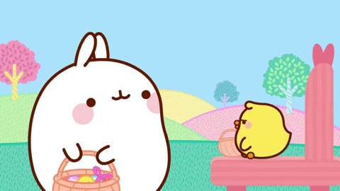
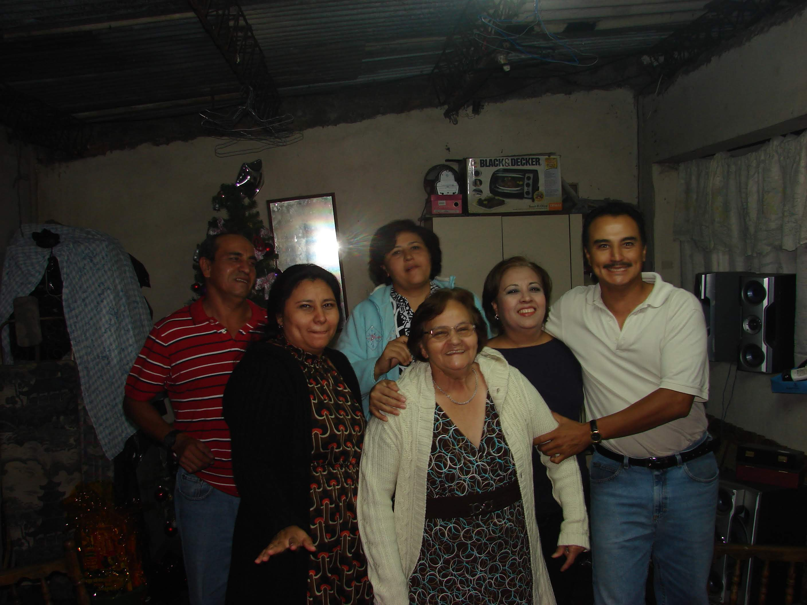
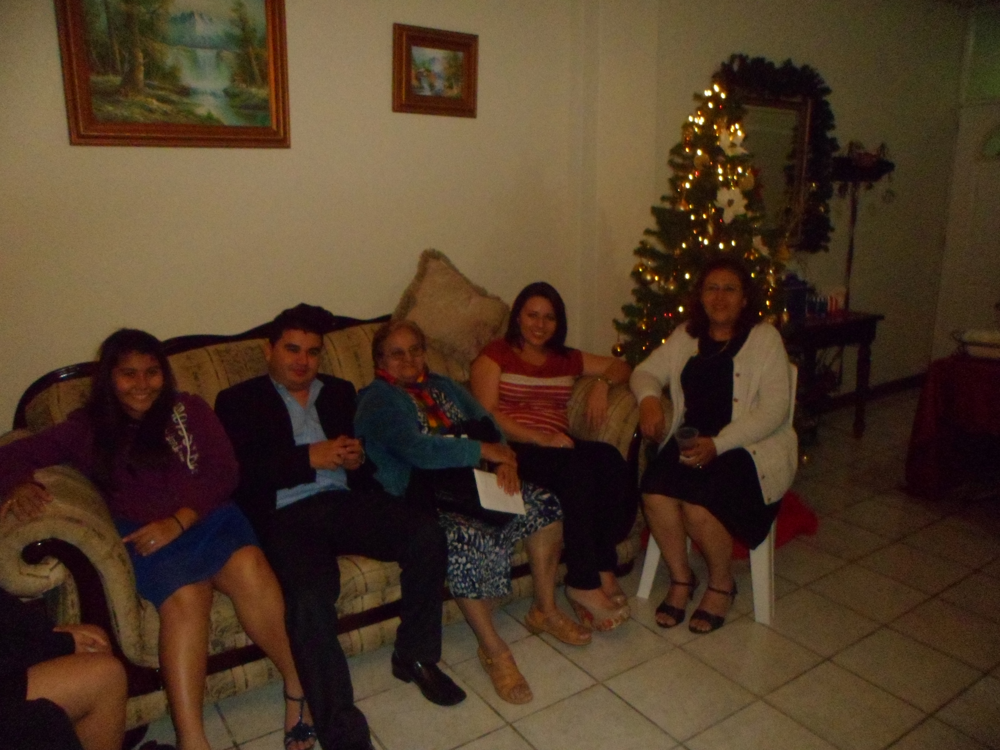
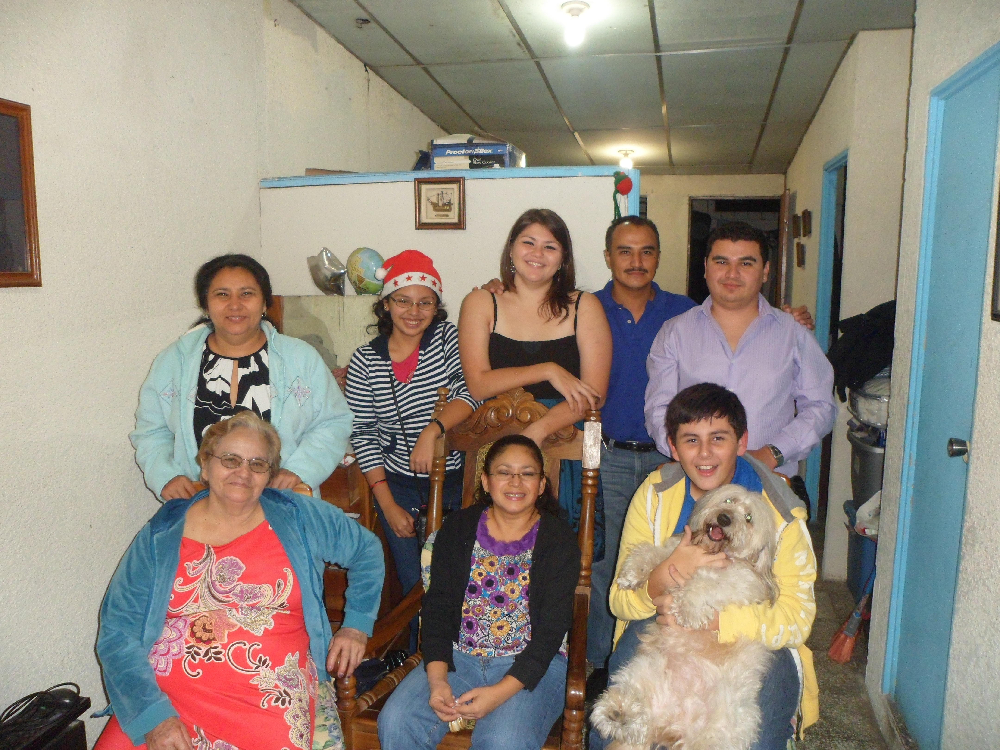

Ahora...
... las reuniones familiares se ven un poco más así...

Este es un pequeño regalo, ya que tú estás tan lejos y no te puedo dar algo en persona. A veces toca improvisar un poquito debido a las circunstancias, pero quería hacerlo especial este año.
De una manera u otra...
Lo bueno es que
ya llegamos hasta Diciembre
Las navidades solían ser sinónimo de estrellitas, volcancitos, candelas, regalos, comida; muchas cosas que quedaron atrás...
... y, la verdad, daba miedo agarrar la estrellita cuando ya se iba a acabar...
O como cuando mi papá llevaba el equipo de sonido, y el ruido se escuchaba hasta donde estaban parqueados los carros
(Así que a veces solo daban ganas de huir de ahí)... tal vez, Navidad era sinónimo de fotos mal tomadas con el arbolito de fondo...
las fotos mal tomadas con el arbolito de fondo
a veces no eran tan malas
... las reuniones familiares se ven un poco más así...
Si te soy completamente sincera
me consumió un poco el trabajo, los regalos, la vida, y ya son las 4:00 AM, así que, sin más preámbulo...
Esta navidad te quiero decir que vos siempre has sido para mí el hermano mayor que nunca tuve. No sé si ya te había hecho este comentario, pero mi grupo favorito es Evanescence aunque casi no lo escuche. Escuchar su música me lleva de regreso a la casa de Vía del Mar, cuando imprimías las letras y me dabas las páginas para que cantáramos juntos canciones como Bring Me To Life. Es el grupo que escucho siempre que siento que no puedo seguir y siempre me levanta, porque esos recuerdos llevan a otros recuerdos. Hasta los detalles más tontos son una gran cosa, como los videos de música que reproducías con la Xbox, uno de Just Be, y uno de alguna canción bien emo que tenía un video de algún juego de Final Fantasy o algo así. La pizza que hiciste después de la primera vez que fui con vos al gimnasio. La vez que me dijiste que si no me iba a una convención de anime, porque solo gente rara iba, que me ibas a llevar a alguna cosa de música electrónica (que aún me da risa acordarme). Cuando dejé OPV y vos fuiste a la entrega de notas en vez de mis papás, y, al llegar a la casa, te fuiste cuando mis papás fueron a comprar pollo porque, puesi, mi mamá da miedo y nos iba a llevar a todos Judas por mi culpa. Cuando ibas en el carro solo escuchando la ABC. La vez que me contaste de la canción creepy de Pretty Little Liars, y alguna canción creepy de American Horror Story. Cada vez que me enseñas tu teléfono nuevo como que si yo entendiera algo de teléfonos, así que me tengo que inventar cosas que preguntar o comentar, porque en realidad no sé nada de eso. El "ush". Eso, y un millón más de pequeñas cosas que parecen bien tontas, pero son los recuerdos que me dan confort y los pienso con mucho cariño. Este año también, creo que lo más wholesome del viaje fue que, como por sacártelo del pecho, me hiciste un número de comentarios de la vida y cosas que algún día me vas a contar literalmente cuando ya íbamos a entrar al aeropuerto. Tengo la impresión de que ambos vos y yo no somos de esos que pueden hablar de sentimientos, así que en vez de eso, cocinamos y encontramos otra manera de expresarnos. Siempre podes contar conmigo para lo que sea porque probablemente soy tu fan #1 que nunca supiste que tenías, porque nunca preguntaste, y siempre te voy a apoyar y a creer en vos, en tu potencial y en tu capacidad. Te quiero un montón.
Feliz navidad José, se que esto no sera tan largo como lo de mi hermana pero es lo que quiero decir, en serio me gusto pasar ese tiempo que fuimos contigo y en serio espero que te acerques a poder hacer lo que queres hacer y talvez vernos otra vez pronto, te quiero primo.
José, mi casi hijo. Cuando naciste nos llenaste de alegría, recuerdo que te ponía en una almohada y te veía. Eras para mí el niño más lindo, mi cariño ha sido siempre fuerte hacia vos. Recuerdo que tu mamá me pedía que fuera donde Alfrego a traer el dinero y siempre discutía con él porque quería que fueras tan importante para él como lo eras para todos. Fuiste creciendo y yo haciendo mi vida, y siempre estabas conmigo. El querer de mi madre y padre, eres una persona especial y aunque estés lejos siempre te recuerdo. Hemos vivido muchas cosas. Has sido incondicional conmigo. En mi corazón hay un lugar especial para vos. Te quiero mucho. Feliz Navidad.
Querido José:
Espero que tengas buena salud y estés disfrutando este día con las precauciones debidas. Estoy muy feliz porque todas las cosas que se sembraron en el terreno de mi tía ya dieron frutos y la casa está casi terminada, no se si recordas el día en que comenzamos a cavar los cimientos del muro pensé que ese día íbamos a morirnos, apenas nos comimos un turrón y una coca y las piedras pesaban pero pese a todo lo que sentí ese día me sentí realmente alegre porque ese iba a ser un comienzo y un impulso para que mi tía tuviera su casa. En ese tiempo estoy agradecida por tu paciencia y los momentos divertidos que pasamos, son momentos valiosos.
En aquel momento siempre te mantuviste lleno de sueños y metas, que sinceramente deseo que algún día podes alcanzar todas aquellas cosas que has soñado, y el camino pese a ser difícil y pesado como las piedras que cargamos esos días sean divertidos y alegres.
Hay algo que especialmente espero que recordes a pesar del paso del tiempo, el último tiempo que tuve la dicha de compartir con mi abuela nos pasábamos los días hablando y jugando adivinanzas, siempre estabas presente en sus oraciones cuando me acercaba al cuarto por la noche la escuchaba.
Mi abuela creyó constantemente en tu potencial y tu amabilidad, incluso aunque otras personas no lo hicieran, para mi abuela no cada vez que hablaba acerca de ti hablaba con orgullo y a veces me daba la sensación que el niño que corria en la casa jugando, para mi abuela siempre fuiste y tengo la seguridad que serás siempre su valioso y amado nieto. Espero que sin importar el lugar donde estés, o lo que hagas podas ser feliz y sonreír alegremente.
Feliz navidad José te mando un abrazo